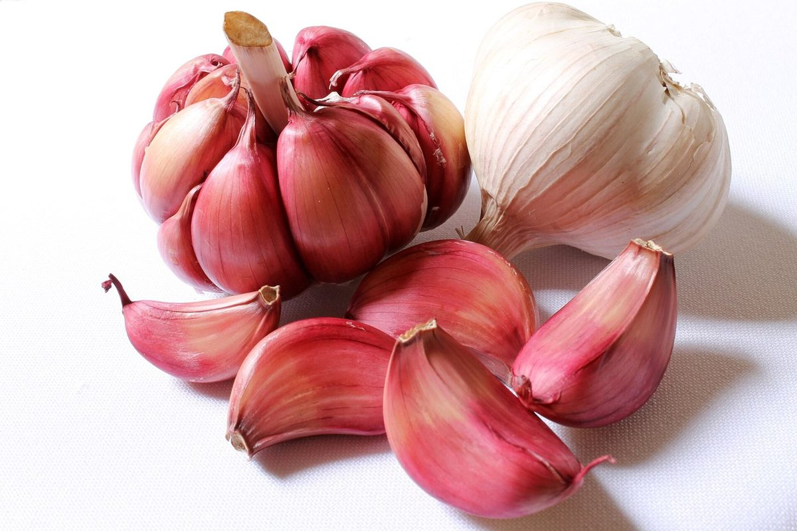

ABOUT
店のこと


確認できたこと
いまわかっていること
現時点でお伝えできるのは、所在地とInstagramのアカウントだけです。お店の考え方や提供内容などは準備中で、ご提供いただいた内容で作り直します。
| 所在地 | 〒959-1281 新潟県燕市桜町５ |
|---|---|
| 電話 | 準備中 |
| 営業時間 | 準備中 |
| 定休日 | 準備中 |
| ご予約 | 準備中 |
| 駐車場 | 準備中 |
| SNS | Instagram @kissa.tsubameya |
このサイトのつくり
機械の図を、ページの骨組みに
全体を「エスプレッソマシンの部位の配置図」にそろえました。上から水タンク、グループヘッド、最下段のドリップトレイと、部位の順に番号をつけています。制作側の連想で、お店の理念・由来とは無関係です。実際の製品の仕様を示すものでもありません。
- 1グループヘッド粉を詰めた器具を差し込み、お湯を送り出す、機械前面中央の金具。
- 2ポルタフィルター持ち手のついた金属の器具。粉を詰めるバスケットを受ける部分。
- 3スチームノズル蒸気を出す細い管。機械の側面から斜め下へ伸びる。
- 4圧力計丸い文字盤と針で、内部の圧力の目安を示す計器。
- 5水タンク機械の上にある、水をためておく透明な容器。
- 6ドリップトレイ落ちたしずくや余った水を受け止める、最下段の受け皿。


